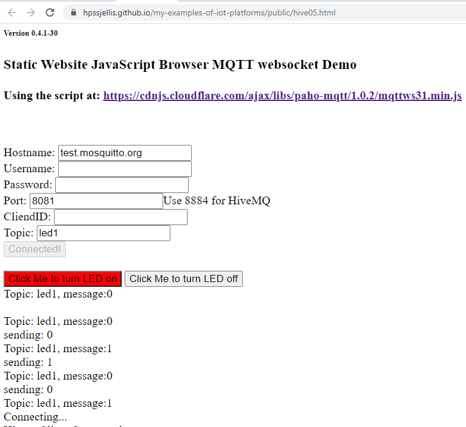

Note: Most of these sites are fine, they just need a User Experienc Expert to make them faster to setup and easier to use.
The Old Index, before Adafruit won!
And here are links to the very important static webpages that can communicate with a few IOT cloud platforms Webhooks are important for small WiFi capable devices to send data, receive an update would be a nice bonus ubidots05.html or ubidots06.html or adafruit01.html or ada02.html
Webhook static webpage using http or https that works with Ubidots and can send-only to Adafruit and probably many other integrations.
Note: I think Ubidots may have tightened up some security because I can't seem to get it working again!
Websockets are important to be able to display data live on a webpage also a bonus if they can send data hive05.html This SSL websocket static webpage can communicate with both mosquitto and HiveMQ and probably many more
Note: For HiveMQ more data needs to be entered: username, password, clientID

Why are static webpages important! NodeJS, PHP etc web servers are very powerful but confusing for my students.
Gitpod is amazing for development of complex web servers and it ties well with Github but does not stay active
for very long, Heroku Cloud is also amazing and works well with Github but is also fairly complex for High School students.
Many IOT cloud sites brag about their "Dashboard" and how easy it is to setup
I like and dislike "dashboards" they are great to get things started, but eventually
I will start to need the page view to be slightly different. Over the last 46 years of coding this situation has happened repeatedly where company programmers try to
make things easier but actually just cripple your ability to do what you want.
An example would be a machine learning program that works from your browser and updates an MQTT site every minute with summarized data.
I could easily (might take a year LOL) make that however with Dashboards I would need my machine learning program on one webpage and the dashboard
openned on another webpage. For many people that would be fine, for me that would be very frustrating.
IOT cloud sites that are good but not yet great in my opinion!
Arduino Cloud: Great, easy to use, dashboard simple to understand and has NONE of my criteria in the image above! No free integrations,
I have found no examples of easy to use MQTT, HTTPS, Websocket-MQTT. Even things like LoRaWan integrations with the
Portenta LoRa Vision Shield do not seem as easy to setup as they should be. I love Arduino hardware and software, but the Arduino cloud is not yet ready
for everything I need, other than a quick student introduction to setting up a cloud variable and changing it.
Adafruit: Free to use, great, easy to use MQTT connectivity also supports CayenneLPP simplification
of the JSON data, Dashboard easy to work with, works great with the Helium LoRaWan network and
the Helium Console. Https webhooks works to update data. https Webhooks do not work to read data. Have not found websocket-MQTT
TagioIO or Ubidots or ThingSpeak: Free to use. Great HTTPS connectivity,
my above webpage demonstrates Ubidots connectivity with https webhooks using a static webpage. I have not found websockets-MQTT and have not tested
arduino MQTT
HiveMQ: Free to use: Great WebSocket connectivity as seen by my static webpage above.
Fast easy to use and easy to understand. Lots of free use. Issues connecting websockets with Helium. I have not found out how to do https webhooks I have not yet tested MQTT with Arduino